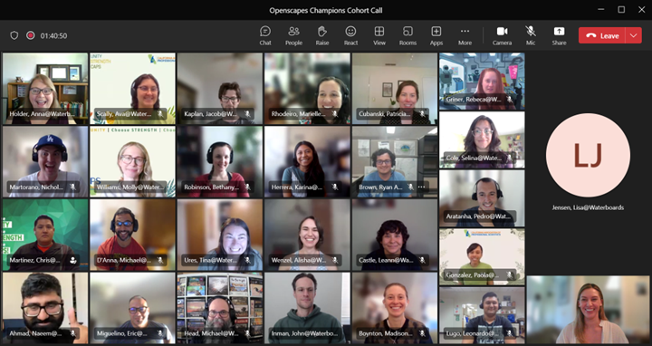

![]()
This blog post is authored by Devan Burke, Tina Ures, and Anna Holder from the The California State Water Resources Control Board (SWRCB; “Water Boards”). Here, we reflect on our 2023 cohort implementation and describe challenges we continue to face and how we plan to iterate and relaunch in 2024. See Openscapes at the Water Boards for more details about how the Water Boards is implementing Openscapes throughout the agency, and openscapes.org/champions for more background on the Champions program.
Quicklinks:
- Cohort webpage: https://openscapes.github.io/2023-swrcb/
- Openscapes at the Water Boards: https://cawaterboarddatacenter.github.io/swrcb-openscapes/
Supporting colleagues to meet open, data, and equity goals
We lead Openscapes Champions Cohorts to support our colleagues to meet open, data, and equity goals. We’ve found this program powerful in our own work and over two years have supported 9 teams (43 total colleagues) to transform their work and collaborate in improved ways with their colleagues. In the 2023 Post-Cohort survey participants shared:
“Normally, I really am resistant to types of trainings and seminars about abstract concepts of the way of work. It feels really intangible and false, kind of like corporate nonsense. But this program was the opposite of that. It was applied. It was by people like me for people like me. It also empowered me to think about team management and the bigger picture about workflow, which feels like forbidden territory for me as a rank and file and also as a newer member of the team I am not as familiar with their work or group history y’know? But our unit supervisor was on the team with us and so now we are just equals and allies in trying to figure out what works.”
“Excellent process, the Pathway was a great tool that has already made an impact in project management moving forward. The establishment of a safe space for group work was critical for our team’s culture and creating an environment that allows for group learning.”
“Openscapes is one of few experiences beyond university that have been so organized, structured, guided, and constructive in developing my collaboration skills.”
In 2023, the Water Boards led a full cohort, which consisted of 6 teams that represented multiple Regions, Divisions and Offices (RDOs) across the Water Boards! Although each team had a different programmatic focus (e.g. Integrated Report, advancing Racial Equity at the Water Boards), they all had members of varying levels of technical expertise, and topic(s) of interest that were similar across teams, including:
- knowledge transfer & documentation
- technical skill building (e.g. gain experience using GitHub)
- making data, information, and/or process more open, transparent, and accessible
- improving team collaboration and workflows

2023 Reflections on our second year
2023 builds on several years’ momentum. We learned how to mentor Openscapes Cohorts in 2021, and in 2022 The California State Water Resources Control Board (SWRCB; “Water Boards”) became the first organization to “independently lead” a small pilot cohort of 3 teams. We’ve learned a lot and were excited to support 6 teams in 2023 (see above), and will continue to grow the program.
Just like in 2022, we customized the Champions Program planning and lessons to better serve our current organizational framework and needs.
For the 2023 cohort, we held a 2-month application period, where teams could opt into participating. This helped ensure buy-in by teams and helped build camaraderie among participants earlier in the process.
We continued to utilize Google tools to reuse and remix drafts of agendas and other materials, but migrated over to Microsoft products to store and share among participants. While the migration of materials took a little bit more work for the Instruction team, it substantially lowered barriers for many participants to access and engage with materials by using the tools participants use in their daily work.
One of the biggest changes for the 2023 Cohort was how we implemented the Openscapes GitHub Clinic. Instead of being presented in a single call earlier in the program, we split the material into two lessons and paired the GitHub content with other complementary material. During Call 3 we covered GitHub for Publishing and paired it with a lesson on the importance of documentation. During Call 4 we discussed using GitHub for project management paired with the data strategies for future us lesson.
So far, each slight adjustment and iteration of our Water Boards Champions Program has resulted in a more positive and impactful experience for participants.
Recurring challenges
While we have seen each Cohort and the overall Openscapes Champions Program at the Water Boards as an overwhelming success, we continue to face some challenges, the largest of which is staff’s ability to set aside time to fully commit to the process. For some this means not being able to apply to the Champions Program at the Water Boards because they don’t have the time, bandwidth, and/or approval to do so. For those that make it into the Program, we emphasized the significance of all Cohort team members being available for each required Cohort Call and Seaside chat in our initial outreach, application, and acceptance process. Despite this clarity, we still faced challenges with some accepted cohort participants’ ability to attend and remain engaged during all the required calls. The five cohort calls are designed to complement and build on each other, and since there are so few, missing even one call can make it incredibly difficult for an individual to catch up. For those few cases where individuals missed more than one cohort call or the team’s Seaside Chats, it had an impact on the team’s ability to gain traction and make progress on their shared Openscapes goals.
Another challenge we face is adequately communicating the awesomeness that is Openscapes to individuals and management who have not experienced it yet. Those that have gone through a cohort or have been part of the broader Openscapes community can more easily understand how doing so can help their work on an individual, team, or cultural level - they “get it”.
“The Openscapes teams talked about the Openscapes culture, but I didn’t really know what that meant until I felt it when listening in on a meeting.” – Andrew Hamilton, Assistant Deputy Director for the Water Board’s Office of Information Management and Analysis (OIMA)
The problem lies in our ability to communicate all of these realized and potential benefits and impacts to those we want to bring into the Openscapes fold, who we know would benefit - but who we need to convince that it’s worth their staff and time investment. This is something we’re working on developing, with tremendous support from the broader Openscapes community.
How we’ll revise & relaunch in 2024!
We’re excited to continue to iterate, expand, and improve the Champions Program at the Water Boards in 2024!
Call for additional mentors & doubling cohorts: We are putting a call out to the Water Boards community for four additional mentors in 2024. If we are able to engage these mentors, we look forward to doubling our efforts and hosting two full cohorts in 2024, one in the Spring (Mar - May 2024) and another in the Fall (Aug - Oct 2024).
Welcome external partners: For the first time at the Water Boards, teams in the 2024 Cohort will be able to include external partners! It is critical for us to continue to prioritize the needs of and benefits to the Water Boards, so we’re strongly recommending that external team members account for fewer than 50% of the individuals on each team.
Experiment with a train-the-trainer model: Our small but mighty Instruction Team has seen how participating teams grow and evolve to achieve their Openscapes goals, and we have lived the benefit of Openscapes in our own work.
“Being a mentor in Openscapes gave me a space to nurture hidden skills within myself and grow into a more mindful human. Coming into Openscapes with no previous knowledge, I felt I was at a disadvantage to succeeding. But that is the true magic and beauty of the Openscapes Program. By showing up, sharing imperfect work, and slowing down to explore ideas, I was able to feel a new confidence in myself. There is not a single moment I can look back and say, ”ah, yes that is the moment I felt it,” because it is not one moment, it is all of the moments that I am taking forward with me and sharing with others!” – Tina Ures, Geologist, Division of Water Quality & member of the Water Boards Openscapes Instruction Team
We want to reach more teams and share what we’re learning with more folks. As we onboard more mentors in 2024 and beyond, we plan on developing a train-the-trainer model for our mentors so we can continue to build the Openscapes community within the Water Boards and contribute back to the broader Openscapes community. We intend on leveraging the amazing resources developed by Openscapes and utilizing a “see one, do one, teach one” approach:
See one: individuals join a cohort as a mentor, with their primary responsibilities being to observe the process and supporting logistics behind cohort implementation (e.g. note taking, managing breakout rooms)
Do one: Mentors graduate to instructors during their second cohort, and co-teach lessons with an experienced instructor.
Teach one: In their third cohort, individuals become the experienced instructor and co-teach lessons with a recently graduated mentor turned instructor.
While we want to grow the Champions Program as quickly as possible, it’s also important for us to ensure that growth is supported and aligned with Openscapes values and goals. As the mentor and instruction community within the Water Boards grows, we will continue to provide guidance, resources, and direct connections to the broader Openscapes community.
Reuse & remix our resources!
The California Water Boards Openscapes Implementation Strategy (February 2022) is an example that we welcome others to emulate or borrow from as it answers many of the questions that come from leadership when participation in Openscapes programs are proposed as part of people’s weekly work. The Strategy conveys the need and the vision for Openscapes at the Water Boards, the target audience, plan and timeline with estimated time commitment expected from participants, expected outcomes and products, and potential challenges.
As part of the California Water Boards Openscapes Champions Program annual outreach, the instruction team hits the virtual road and shares past, present and future Openspaces opportunities with Water Board colleagues (slides) in different meetings, internal Roundtables, and Region, Division, or Office (RDO) meetings. This is one of the main avenues through which people learn about this opportunity, and a model others can use to gain traction for running an Openscapes Cohort in their organization. We invite you to reuse or remix our Implementation Strategy document or outreach slides!
Citation
@online{holder2023,
author = {Holder, Anna and Burke, Devan and Ures, Tina},
title = {California {Water} {Boards’} 2nd {Annual} {Openscapes}
{Champions} {Program} - {Reflections} \& {Future}},
date = {2023-12-13},
url = {https://openscapes.org/blog/2023-12-13-waterboards/},
langid = {en}
}